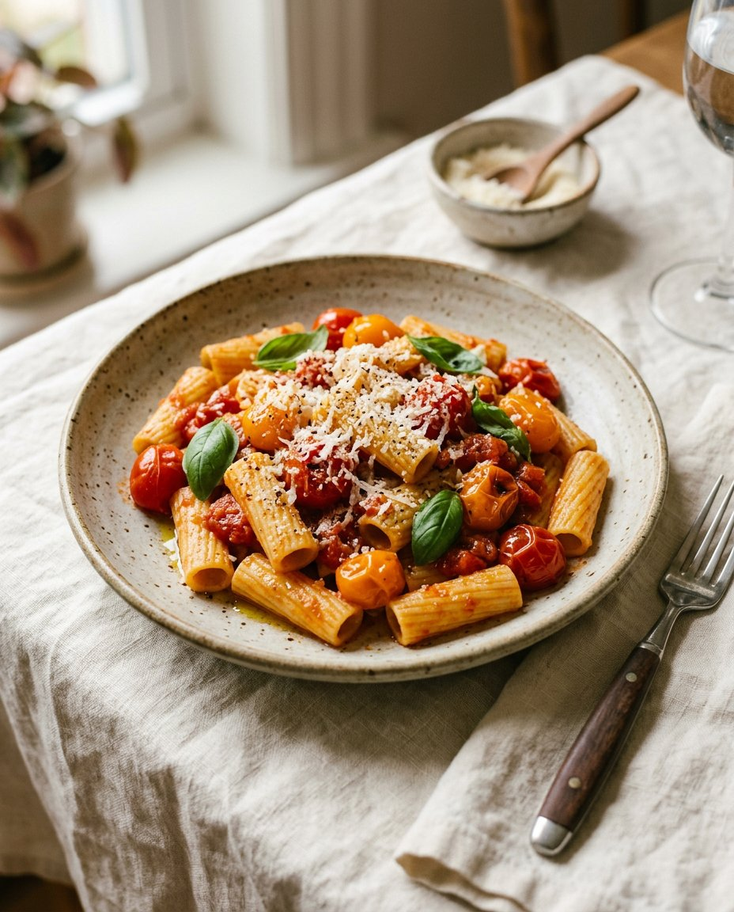
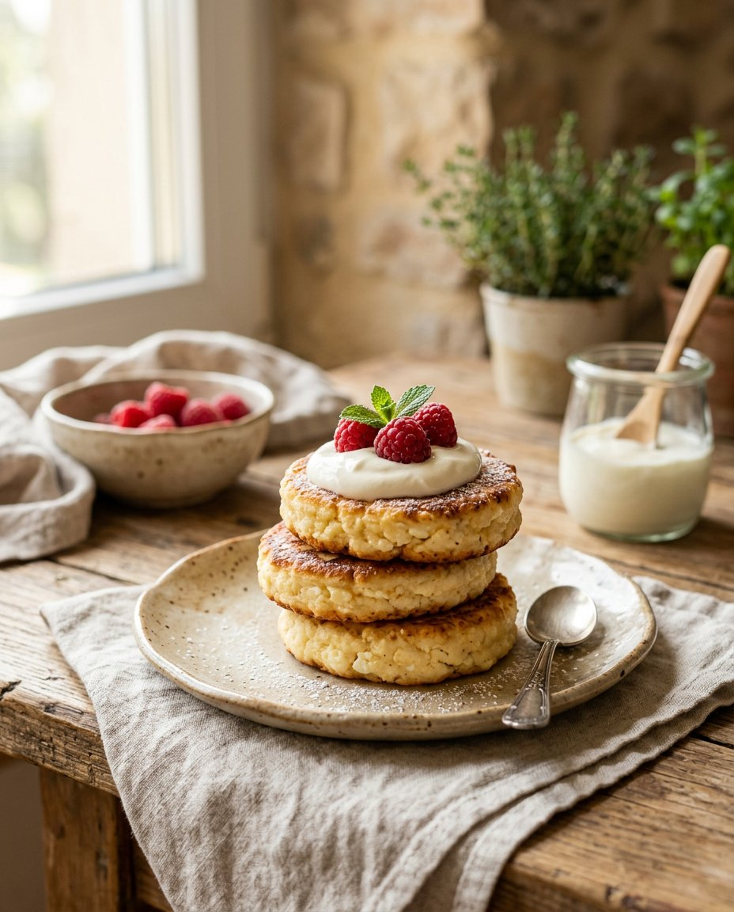
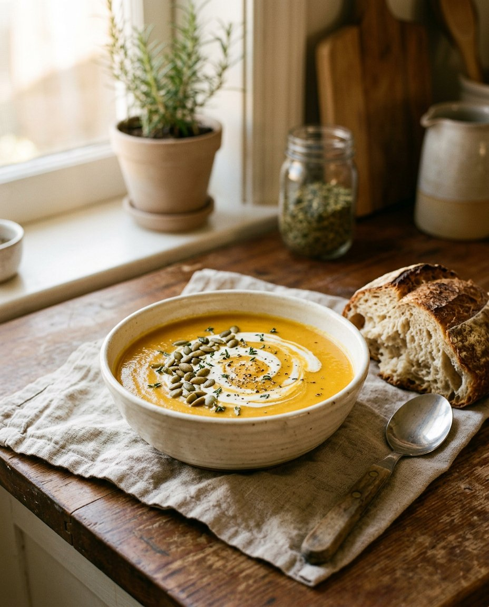
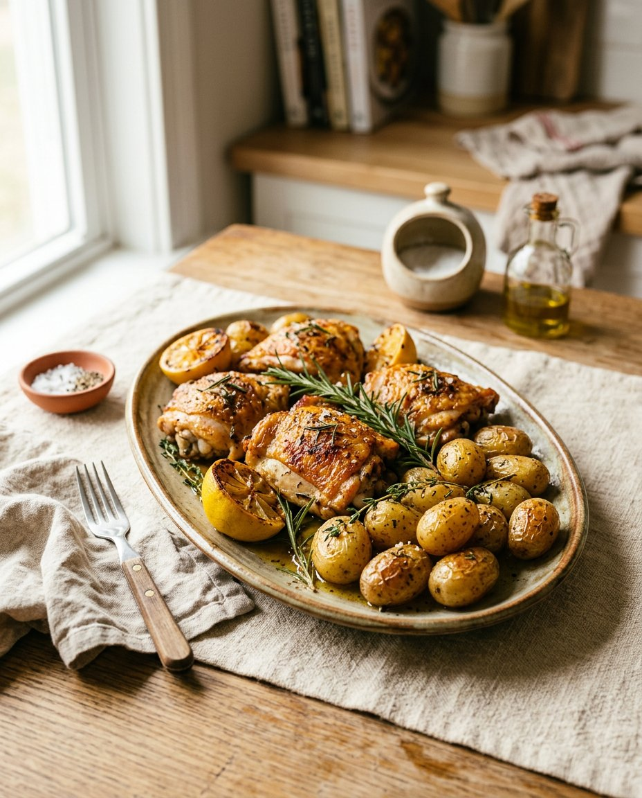
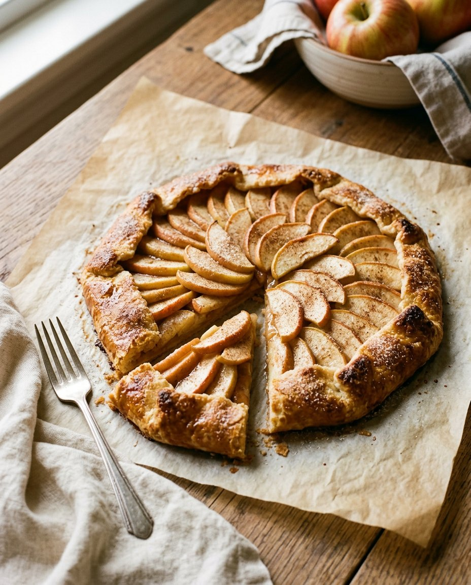

УжинПаста с томатами и базиликом
Сочная паста с помидорами, чесноком и свежей зеленью — простой ужин с итальянским настроением.
СМОТРЕТЬ РЕЦЕПТВкусные рецепты для обычных дней, неспешных завтраков и тёплых встреч за столом.
Немного вдохновения
для каждого момента.
Понятные ингредиенты, немного времени и много поводов собраться вместе.
6 рецептов
ВЫБИРАЙТЕ С ЛЮБОВЬЮ ✳
УжинСочная паста с помидорами, чесноком и свежей зеленью — простой ужин с итальянским настроением.
СМОТРЕТЬ РЕЦЕПТ
ЗавтракРумяные снаружи, нежные внутри. Подавайте со сметаной и любимыми ягодами.
СМОТРЕТЬ РЕЦЕПТ
ОбедБархатный суп с овощами и сливками, который особенно хорош с кусочком хлеба.
СМОТРЕТЬ РЕЦЕПТ
УжинВсё запекается в одной форме: румяная курица, нежный картофель и ароматные травы.
СМОТРЕТЬ РЕЦЕПТ Салат
СалатХрустящие овощи, нежный авокадо и лёгкая лимонная заправка за считаные минуты.
СМОТРЕТЬ РЕЦЕПТ
ВыпечкаРассыпчатое тесто и сочные яблоки — домашняя выпечка без сложной формы.
СМОТРЕТЬ РЕЦЕПТПопробуйте другое название, ингредиент или категорию.
Здесь не нужно быть шефом. Достаточно пары хороших продуктов, любимой тарелки и желания приготовить что-то для себя и близких.
О проекте